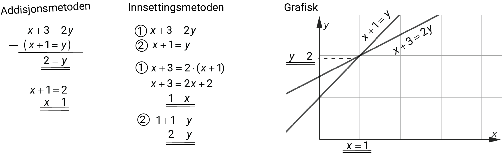
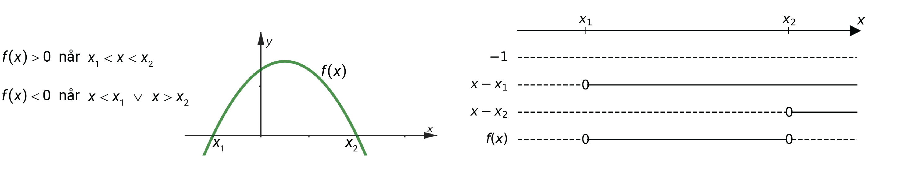
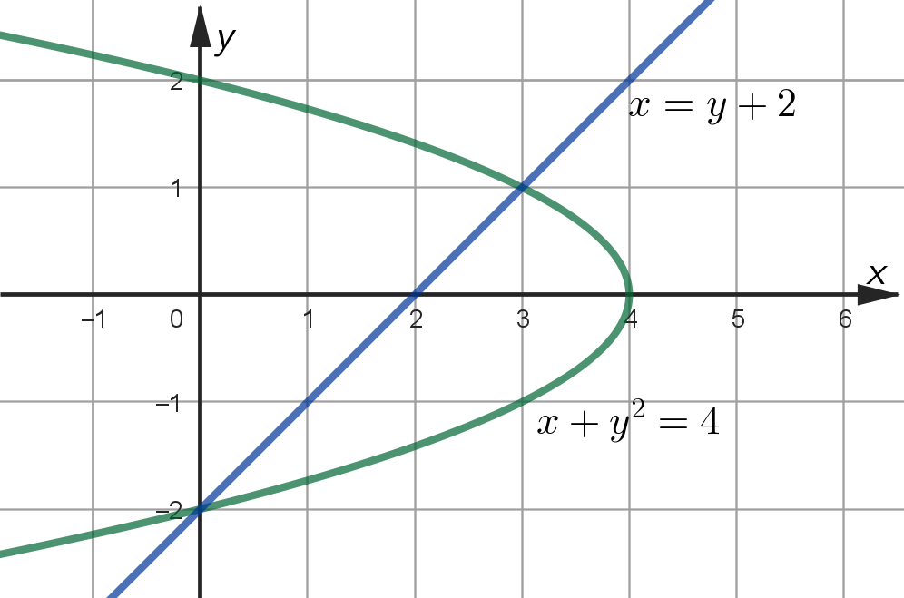
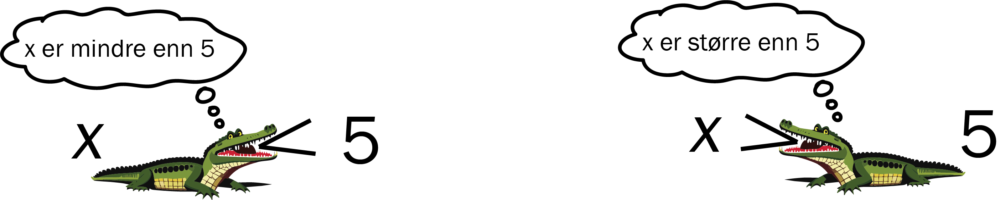
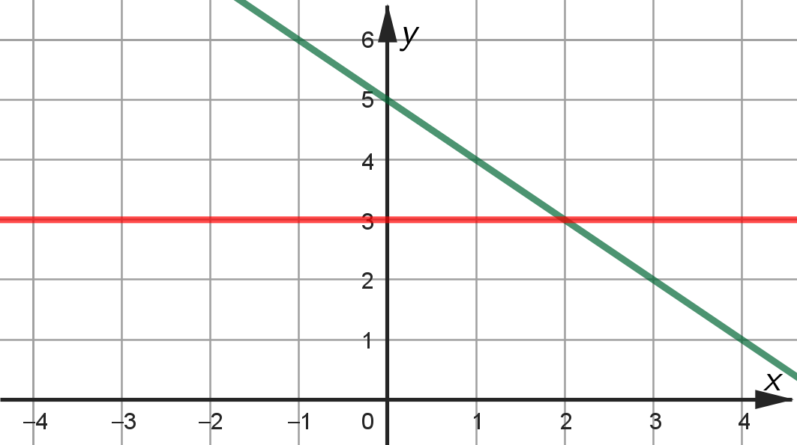
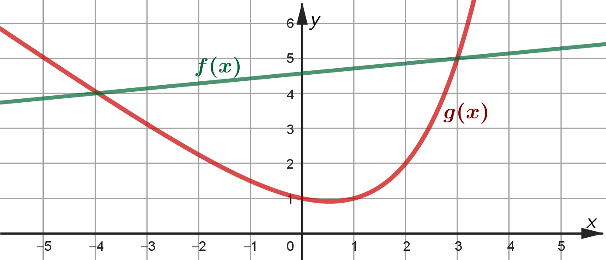
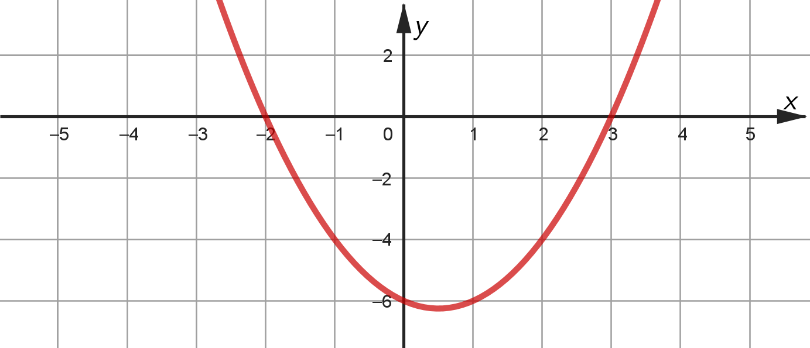
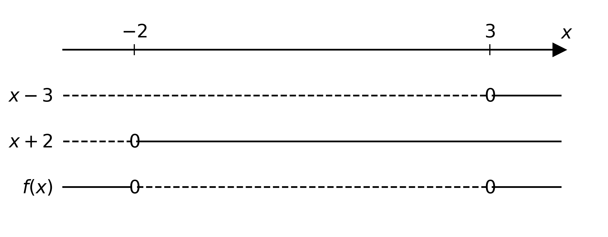
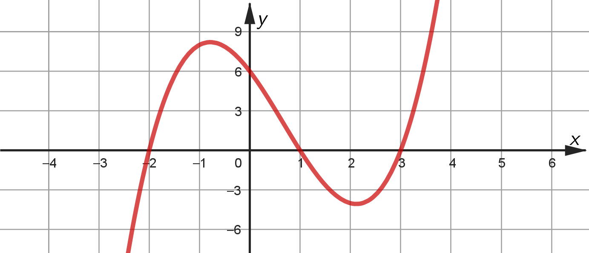
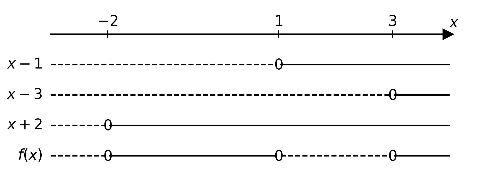

Likningssystemer og ulikheter
Du skal ha kompetanse om
- ulike måter å løse likningssystemer
- ulike måter å løse ulikheter


Addisjonsmetoden
Med addisjonsmetoden legger vi sammen ligninger (eller trekker den ene fra den andre), slik at vi får eliminert bort \(x\) eller \(y\). Når vi har bestemt \(x\)- eller \(y\)-verdien, setter vi denne inn i en av likningene, og bestemmer den andre verdien.Eksempel
$$ \begin{align} 2x + 3y &= 5 \\ x - 3y &= 4 \end{align} $$ Løs likningssystemet.
Vi legger sammen likningene og får
$$
\begin{align}
3x + 0y &= 9 \\
x &= 3
\end{align}
$$
Setter vi dette inn i den nederste likningen, får vi
\[ 3 - 3y = 4 \;\; \rightarrow \;\; 3 - 4 = 3y \;\; \rightarrow \;\; -\frac{1}{3} = y \]
Dermed er løsningen \(x = 3\) og \(y=-\frac{1}{3}\).
Innsettingsmetoden
Med innsettingsmetoden finner vi et uttrykk for \(x\) eller \(y\) fra en av likningene, og setter dette uttrykket inn i den andre likningen; Vi finner da en verdi for \(x\) eller \(y\), som vi kan sette inn i en av likningene for å bestemme den siste verdien.Eksempel
$$ \begin{align} 2x + 3y &= 5 \\ x - 3y &= 4 \end{align} $$ Løs likningssystemet.
Den nederste likningen kan skrives om til
\[ x = 4 + 3y \]
Setter vi dette inn i den øverste likningen, får vi
$$
\begin{align}
2(4+3y) + 3y &= 5 \\
8 + 6y + 3y &= 5 \\
9y &= - 3\\
y &= -\frac{1}{3}
\end{align}
$$
Setter vi dette inn i uttrykket for \(x\) får vi
\[ x = 4 + 3\cdot\left( -\frac{1}{3} \right) = 4 - 1 = 3 \]
Dermed er løsningen \(x = 3\) og \(y=-\frac{1}{3}\).
Eksempel
$$ \begin{align} x + y^2 &= 4 \\ x &= y + 2 \end{align} $$ Løs likningssystemet.
Den nederste likningen gir et uttrykk for \(x\), som vi kan sette inn i den øverste likningen,
$$
\begin{align}
y+2 + y^2 &= 4\\
y^2 + y - 2 &= 0 \\
(y + 2)(y - 1) &= 0 \\
y &= -2 \;\;\; \vee \;\;\; y = 1
\end{align}
$$
Vi setter disse verdiene inn i uttrykket for \(x\),
\[ x = -2 + 2 = 0 \;\;\; \vee \;\;\; x = 1 + 2 = 3 \]
Dermed er løsningen \(x=0\) og \(y=-2\), eller \(x=3\) og \(y=1\).
Grafisk løsning av likningssystemer
Når vi løser likningssystemer grafisk tegner vi kurvene til likningene (f.eks. ved hjelp av verditabell), og ser hvor de møter hverandre.Eksempel
$$ \begin{align} x + y^2 &= 4 \\ x &= y + 2 \end{align} $$ Løs likningssystemet grafisk.
Vi tegner kurvene til begge likningene ved å sette opp en verditabell, eller ved å bruke en digital graftegner.

Skjæringspunktene gir at løsningene \(x=0\) og \(y=-2\), eller \(x=3\) og \(y=1\).Ulikheter
Ulikhetstegnene er definert ved- \(<\) "er mindre enn"
- \(>\) "er større enn"
- \(\leq\) "er mindre eller lik"
- \(\geq\) "er større eller lik"

Eksempel
\[ 5-x \leq 3 \] Løs ulikheten.
Vi ser at \(5-x \leq 3\) når \(x\geq 2\).
Merk: Det er mange måter å løse ulikheter på.
Ulikheten i eksempelet over kan løses som en likning, grafisk eller ved å bare se løsningen (med prøving-og-feiling).
Ulikheten i eksempelet over kan løses som en likning, grafisk eller ved å bare se løsningen (med prøving-og-feiling).
Eksempel
\[ 5-x \leq 3 \] Løs ulikheten grafisk.
Vi tegner linja \(y=5-x\) og linja \(y=3\).

Vi ser at \(5-x\leq 3\) når \(x\geq 2\).Eksempel

Bestem løsningen av ulikheten \(g(x) < f(x)\).
Vi ser at verdiene til \(g\) er mindre enn verdiene til \(f\) når \(-4 < x < 3\).
Eksempel
Bestem løsningen av ulikheten \(g(x) > f(x)\).
Vi ser at verdiene til \(g\) er større enn verdiene til \(f\) når \(x < - 4\) eller \(x > 3\).
Andregradsulikheter
Eksempel
\[ x^2 - x - 6 > 0 \] Løs ulikheten.
Vi tegner grafen til \(f(x) = x^2 - x - 6 = (x+2)(x-3)\).

Vi leser av at \(f(x)>0\) når \(x<-2\) eller \(x > 3\).
Merk: Det er flere måter å løse andregradsulikheter på. I tillegg til å løse dem grafisk, kan vi bruke fortegnsskjema.
Eksempel
\[ x^2 - x - 6 > 0 \] Løs ulikheten.
Vi lager fortegnsskjema til funksjonen \(f(x) = x^2 - x - 6 = (x+2)(x-3)\).
Stiplet strek sier at faktoren er negativ, og heltrukken strek at den er posistiv.
Stiplet strek sier at faktoren er negativ, og heltrukken strek at den er posistiv.

Vi leser av at \(f(x)>0\) når \(x<-2\) eller \(x > 3\).Tredjegradsulikheter
Eksempel
\[ x^3 - 2x^2 - 5x + 6 \geq 0 \] Løs ulikheten grafisk.
Med prøving-og-feiling ser vi at \(x=1\) er et nullpunkt:
\[1^3 - 2\cdot 1^2 - 5 \cdot 1 + 6 = 1 - 2 - 5 + 6 = 0\]
Dermed kan uttrykket faktoriseres til
\[ (x - 1)(ax^2 + bx + c) \]
For å bestemme uttrykket i den siste parentesen deler vi på \((x-1)\),
$$
\begin{align}
&\hphantom{-(}(x^3 - 2x^2 - 5x + 6) : (x - 1) = x^2 - x - 6\\
&\underline{\;-(x^3 - x^2)}\\
&\hphantom{-(x^3}-x^2 - 5x + 6\\
&\hphantom{x^3}\underline{\;-(-x^2 + x)}\\
&\hphantom{-(x^3-x^2)}-6x + 6\\
&\hphantom{(x^3-x^2}\underline{\;-(-6x + 6)}\\
&\hphantom{-(x^3-x^2-6xxx)}0 \text{ i rest}
\end{align}
$$
Dermed kan uttrykket faktoriseres til
\[ (x - 1)(x^2 - x - 6) = (x-1)(x-3)(x+2) \]
Vi tegner en skisse av grafen til \(f(x) = (x-1)(x-3)(x+2) \)

Vi leser av at \(f(x)\geq 0 \) når \(-2 \leq x \leq 1\) eller \(x \geq 3\).Eksempel
\[ x^3 - 2x^2 - 5x + 6 \geq 0 \] Løs ulikheten med fortegnsskjema.
Vi faktoriserer uttrykket (se eksempelet over).
\[ x^3 - 2x^2 - 5x + 6 = (x-1)(x-3)(x+2) \]
Vi lager fortegnsskjema.

Vi leser av at \(f(x)\geq 0 \) når \(-2 \leq x \leq -1\) eller \(x \geq 3\).